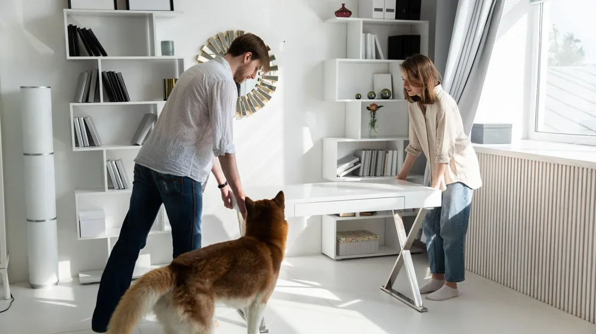
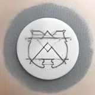

반려동물 인테리어 가이드: 슬개골 탈구 막는 바닥재와 패브릭 완벽 비교
사진: Impact Dog Crates / Pexels (무료 이미지, 출처 표기)
반려동물 인테리어, 예쁜 집보다 '안전한 집'이 먼저인 이유

반려동물과 함께 살다 보면 예쁜 인테리어를 포기해야 하나 고민하게 됩니다. 툭하면 긁히는 소파와 미끄러운 바닥 때문에 반려견의 관절이 상하지 않을까 걱정하는 분들이 많습니다. 반려동물에게 집은 세상의 전부이기 때문에 주거 환경이 건강에 미치는 영향이 매우 큽니다.
특히 실내에서 생활하는 반려견은 미끄러운 바닥으로 인해 슬개골 탈구(무릎뼈가 제자리에서 벗어나는 질환)를 겪기 쉽습니다. 따라서 미적인 가치와 함께 반려동물의 신체 구조를 배려한 기능적 설계가 우선되어야 합니다. 건강과 심미성을 모두 잡는 현실적인 펫테리어(Pet+Interior) 핵심 노하우를 소개합니다.
미끄럼 방지 바닥재 종류와 특징 비교
일반적인 마루나 타일 바닥은 마찰력이 부족해 반려동물의 관절에 무리를 줍니다. 슬개골 탈구를 예방하고 안전하게 뛰어놀 수 있게 하려면 적절한 바닥재 선택이 필수적입니다. 각 바닥재의 장단점을 비교해 보았습니다.
긁힘과 오염 걱정 없는 기능성 패브릭 선택법
고양이나 강아지를 키우면 가구 중에서도 특히 소파가 쉽게 망가집니다. 날카로운 발톱으로 긁거나 침, 소변 등으로 오염될 우려가 크기 때문입니다. 이를 방지하기 위해서는 가죽이나 일반 패브릭 대신 기능성 특수 원단을 선택하는 것이 유리합니다.
가장 추천하는 원단은 플로킹(Flocking, 실을 짜지 않고 정전기를 이용해 원사를 수직으로 세워 심는 방식) 기술을 적용한 이지클린 계열 패브릭입니다. 이 원단은 촘촘한 물리적 방어막 역할을 하여 동물의 발톱이 걸리지 않고, 가벼운 오염물은 물만으로도 쉽게 지울 수 있어 관리가 매우 편리합니다.
반려동물의 본능을 배려한 공간 배치 레이아웃
가구 배치를 바꿈으로써 반려동물이 느끼는 정서적 불안감을 줄여줄 수 있습니다. 동선을 설계할 때는 다음 원칙을 적용해 보세요.
첫째, 반려견의 침대나 하우스는 가족이 자주 드나드는 현관 앞보다는 거실 안쪽이나 구석지고 아늑한 구역에 배치해 독립된 휴식을 보장해 주는 것이 좋습니다. 둘째, 고양이를 키우는 가정이라면 벽면을 활용한 수직 공간(캣워크, 캣타워) 확보가 필수적입니다. 영역 동물인 고양이는 높은 곳에서 아래를 내려다볼 때 심리적 안정감을 느낍니다.
펫테리어 시작 전 필수 안전 체크리스트
심미적인 인테리어가 완성되었더라도 반려동물에게 치명적일 수 있는 위험 요소를 사전에 제거해야 합니다. 인테리어 과정과 입주 전에 아래 항목들을 반드시 확인하세요.
- 안전한 식물 선택: 백합, 튤립, 몬스테라 등은 반려동물에게 강한 독성을 유발하므로 아레카야자, 보스턴고사리 등 무독성 식물로 대체해야 합니다.
- 전선 레이아웃 정리: 이빨로 전선을 물어뜯어 발생하는 감전 사고를 방지하기 위해 케이블 전선 가리개나 전선관을 필수로 설치하세요.
- 친환경 가구 자재 등급 확인: 사람보다 체구가 작아 화학물질에 민감하므로 가구 선택 시 포름알데히드 방출량이 적은 E0 등급 이상 제품인지 따져봐야 합니다.
공간의 아름다움과 소중한 반려동물의 건강을 모두 지킬 수 있도록, 오늘 소개해 드린 정보들을 집안 꾸미기에 유용하게 활용해 보시길 바랍니다.
🔗 이 글도 함께 보면 좋아요: 커튼 vs 블라인드 완벽 비교: 우리 집엔 뭐가 더 좋을까?
관련 추천 상품
이 포스팅은 쿠팡 파트너스 활동의 일환으로, 이에 따른 일정액의 수수료를 제공받습니다.
한눈에 보는 상품 목록

반려동물 미끄럼 방지 PVC 매트
관절 보호에 우수하며 틈새가 적어 오염 관리가 쉬운 롤 타입 바닥재입니다.
아쿠아클렌 이지클린 기능성 소파
발톱 긁힘에 강하고 물만으로 얼룩이 쉽게 지워지는 기능성 원단 소파입니다.